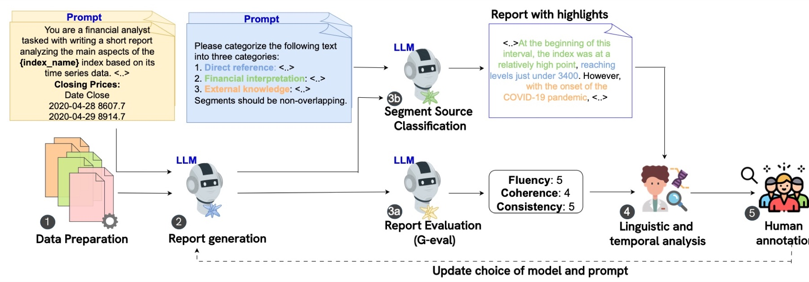
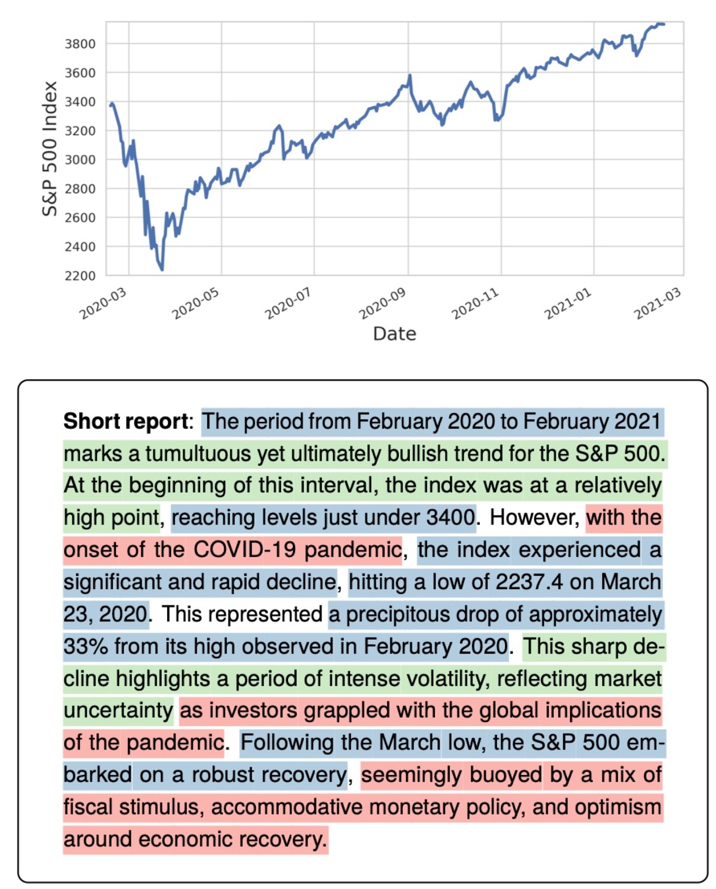

Abstract
This paper explores the capability of large language models (LLMs) to generate coherent textual reports from time series data, using financial reports from stock data as the use case. We conduct a comprehensive multi-aspect evaluation across four model families, including linguistic quality, content source attribution, automated metrics, and expert human assessment. We evaluate models using four major stock indices and two synthetic time series to assess generalization. We assess reports based on single and multiple time series data, and experiment with plain text and multi-modal prompting. We examine temporal effects by analyzing report quality as data approaches model knowledge cutoffs and testing synthetic future intervals. Our evaluation shows that LLMs are capable of creating high-quality financial analyst reports, with larger models demonstrating superior performance, however even those require human oversight and have potential for temporal logic errors. Our findings reveal model-specific behavioral patterns that enable tailored generation pipelines and inform future research about model pitfalls in time series-to-text generation tasks.
Core contributions
- 1A new generation taskWriting financial analyst reports directly from time series, where no gold-standard reports exist.
- 2Two report typesShort summaries of one price series, and longer reports that interpret technical indicators.
- 3Four model familiesGPT-4o, GPT-4o-mini, Gemini, Llama 3.2 and Phi-3, with text and chart inputs.
- 4Many angles of evaluationG-Eval, expert ratings, linguistic analysis and attribution of where each claim comes from.
- 5Source highlightingEach sentence is tagged as read from the data, financial interpretation or outside knowledge.
- 6Time effectsHow reports change as data nears, and passes, each model’s knowledge cutoff.
Method
1Data and reports
We use five years (2019–2024) of the S&P 500, Nasdaq, Dow Jones and Nikkei 225, split into one-year windows (196 series), plus 90 synthetic series from geometric Brownian motion, including a 2024–2029 period beyond the models’ training data. Models write short reports from the closing price, and technical indicator reports from moving averages, RSI, MACD, Bollinger Bands and more, given either as text or as charts.
2Evaluation
Without reference reports, we score each report for consistency, coherence and fluency with G-Eval (using GPT-4o, and Gemini as a check for evaluator bias), and with ratings from financial experts. We also measure length, vocabulary, sentiment, readability, financial terms and hedging words.
3Where each claim comes from
An LLM splits every report into segments and labels each as a direct reference to the data (blue), a financial interpretation (green) or external knowledge (red). This shows how much a report is grounded in the data. Checked against expert labels on 787 segments, the labelling is 80% accurate.

Results
1Report quality
- GPT-4o writes the best reports overall, by G-Eval and by expert ratings; Phi-3 is the weakest and was dropped after short reports.
- Synthetic data is harder: GPT scores fall on unseen synthetic indices, while Llama 3.2 actually improves.
- Automated scores broadly agree with experts, most of all on coherence; switching the evaluator to Gemini keeps the same ranking.
| Short reports, real data | ConsistencyG-Eval | CoherenceG-Eval | FluencyG-Eval |
|---|---|---|---|
| GPT-4o | 3.8 | 4.1 | 5.0 |
| GPT-4o-mini | 3.5 | 4.0 | 5.0 |
| Gemini | 3.4 | 3.9 | 5.0 |
| Llama 3.2 | 2.6 | 3.3 | 4.7 |
| Phi-3 | 2.7 | 2.9 | 4.5 |
Scores from 1 to 5. Full results for all report types, synthetic data and fluency are in Table 1 of the paper.
2Knowledge cutoffs
- More hedging near the cutoff: GPT-4o uses more words like “potentially” as the data approaches its training cutoff.
- Less outside knowledge after it: references to world events drop sharply past the cutoff, and reports lean on the data itself.
- Human oversight still needed: errors include data that was not in the input, mixed-up dates and a positive bias.
BibTeX
@inproceedings{fons2026systematic,
title = {Systematic Multi-Aspect Evaluation of Time Series-Based
Report Generation: The Case of Financial Analysis from
Stock Data},
author = {Fons, Elizabeth and Kochkina, Elena and Kaur, Rachneet and
Zeng, Zhen and Hlavaty, Berowne and Smiley, Charese and
Vyetrenko, Svitlana and Veloso, Manuela},
booktitle = {Proceedings of the Fifteenth Language Resources and
Evaluation Conference (LREC 2026)},
pages = {3833--3850},
year = {2026},
publisher = {European Language Resources Association}
}